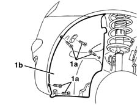
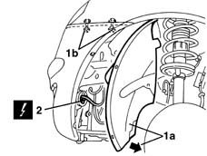
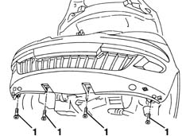
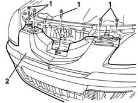
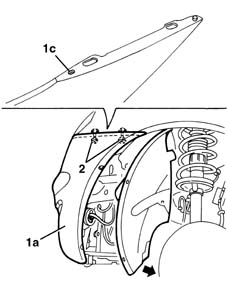

7210E10 R.R. FRONT BUMPER
- Path
- Procedures > 72 PANELS AND FRAME > 7210 REMOVING REFITTING > 7210E external parts > 7210E10 R.R. FRONT BUMPER
- Kind
- repair procedure (removal / refitting; the operation number is the code)
- Applies to
- all engines; all production periods
- Interactive page
- https://sloeber94.github.io/elrnDB-lYpsln/en/#/2429732
Applies to: all engines; all production periods
 Removing
Removing
 Refitting
RefittingPlace the vehicle on a lift.
Open the bonnet lid.
1. Working on both sides of the car, undo the bolts (1a) securing the end of the front wheelarch (1b).

Applies to: all engines; all production periods
1. Move the wheel arch (1a) slightly and undo the bolts (1b) fixing the side of the bumpers.
2. Disconnect the electrical connections for the fog lights.
 | Name | Connector |
|---|---|---|
2 | Left fog lamp |
| Name | Connector |
|---|---|---|
2 | Right fog lamp |

Applies to: all engines; all production periods
Raise the car.
1. Undo the lower bolts fixing the bumper.

Applies to: all engines; all production periods
Lower the vehicle.
1. Undo the upper bolts fixing the bumper.
2. Remove the bumper.

Applies to: all engines; all production periods
If necessary, see op. 7205E10
Applies to: all engines; all production periods
Refitting
RemovingCheck that the bumper is undamaged.
1. Position bumpers (1a) and engage pins (1b) and slots (1c) in their seats on both sides.
2. Tighten the side bolts.

Applies to: all engines; all production periods
Tighten the upper bolts fixing the bumper.
Raise the vehicle and tighten the lower bolts fixing the bumper.
Connect the electrical connections of the front fog lamps.
Tighten the front wheel arch bolts
Reclose the bonnet lid.
Remove the vehicle from the lift.
If necessary, 5540D38 fog lamp beam - adjust
Topics linked from this page (3)
Topics that link to this page (13)
- 1020A20 crank case oil sump - r + r clean seals for sealant application
- 1020D14 front crank shaft oil seal cover - r + r and replace seals for versions with oil pump on crank shaft, timing side
- 1088B20 engine cooling radiator - r + r
- 1088E10 radiator cooling fan - r + r
- 5040A40 air conditioner condenser - r+r
- 5040A44 air conditioner dehydrating filter/accumulator - r+r
- 5040A50 pipe from compressor to air conditioner condenser - r+r
- 5040A60 pipe from condenser to evaporator (expansion pipe) - r+r
- 5040A69 PIPE from condenser to connector for evaporator - R.R.
- 5040B14 air conditioner system multi-level pressure switch - r+r
- 5540B70 Left front LIGHT CLUSTER with direction indicator - R.R.
- 5540B71 Right front LIGHT CLUSTER with direction indicator - R.R.
- 7205E10 Stripping FRONT BUMPER